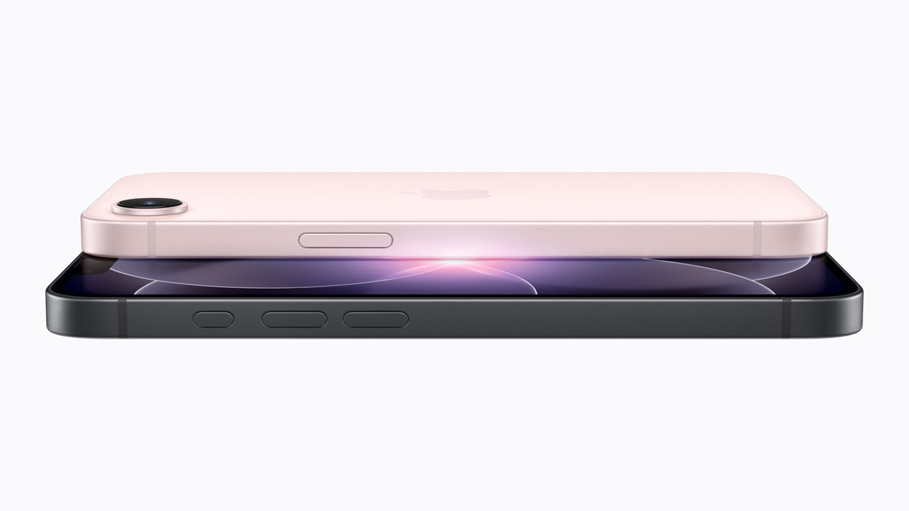

2026年3月、Appleは新しいエントリーモデル「iPhone 17e」を発表しました。 日本価格99,800円（税込）という戦略的な価格設定。 しかし、その中身は決して「廉価版」という言葉では片付けられません。 最新のA19チップを搭載し、Apple Intelligenceをフルサポート。 これは、スマートフォンの新しいスタンダードを定義する、革命的な一台です。
セクション1：A19チップと、Apple Intelligenceの民主化
iPhone 17eに搭載されたA19チップは、iPhone 17 Proと同じ世代のアーキテクチャを採用しています。 これにより、Apple Intelligenceの全機能がエントリーモデルでも利用可能になりました。 文脈を理解するSiriの応答、写真からの不要オブジェクト削除、メールの自動要約。 これまでProモデルだけの特権だった最先端のAI体験が、 誰もが手に届く価格で提供される。これは、AIの「民主化」を意味します。
iPhone 17e 主要スペック
プロセッサ
A19チップ (2nm世代)
メモリ
8GB (AI Minimum)
ストレージ
256GB (Base Model)
価格
99,800円 (税込)
セクション2：MagSafeとQi2対応、広がるエコシステム
iPhone 17eは、エントリーモデルとして初めてMagSafeおよびQi2に対応しました。 これにより、Proモデルと同じアクセサリーエコシステムを共有できます。 MagSafe対応のカーチャージャー、ワイヤレス充電パッド、 そして磁力で装着するウォレットやスタンド。 「充電」という日常の動作が、より便利に、よりスマートに進化します。

セクション3：ストレージ倍増、256GBからのスタート
これまでのエントリーモデルは128GBがベースでしたが、 iPhone 17eは256GBからスタートします。 写真や動画、アプリをたっぷり入れても、ストレージ不足に悩まされることはありません。 オンデバイス処理を優先するApple Intelligenceの性能を最大限に引き出すための、 Appleからのメッセージとも言える仕様変更です。

結論：価値の再定義、新しいiPhoneの形
iPhone 17eは、「安いiPhone」を探している人のための選択肢ではありません。 「最新のテクノロジーを、最もバランス良く手に入れたい」という人のための、正解です。 最新のチップ、AI機能、そして充実したストレージ。 これらすべてを、99,800円で。 これからのスマートフォンの「基準」は、このiPhone 17eになるでしょう。
詳細は Apple公式サイト で確認してみてください。